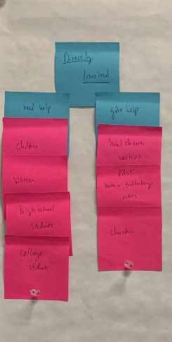

One important step in facing this
design challenge for "One Child at a Time" was to focus on who I am trying to reach and why. I grouped
together different people groups into who would be the most directly impacted and this image shows the
final list of those directly involved. I also seperated those that needed help and those who could
provide help. Children, women, highschool students, and college students were the directly impacted
groups in need of help and healthcare workers, past human trafficking victims, and churches are the
directly impacted groups that could provide help.
Overarching Goals
| Client |
- help those involved in human trafficking
- inform others on how to help or guard against human trafficking
- raise awareness for their case
- gain money to go towards their programs
|
| Audience |
- seek help if they are currently being trafficked
- Schedule a talk with a worker of One Child at a Time
- work/volunteer with One Child at a Time
- give financially to One Child at a Time
- sign up for email updates on human trafficking
- view current news of human trafficking
- learn about One Child at a Time as an organization
|
| Website |
- develop a hierarchy for information and different areas of website
- organize information efficiently
- unify brand aesthetics
|
Specific Goals
| User |
Goal |
Action |
| Victim |
Provide help as soon and as effectively as possible |
-
Have emergency contact information accessible immediately
|
| School |
Educate students and faculty on how to guard against human trafficking and help those being trafficked |
-
Provide a page on what educating adults and children in schools could look like with recent success and contact information to bring a "One Child at a Time" program to that school
|
| Church |
Educate adults and children on human trafficking and draw in more volunteers |
-
Provide examples of educating children and adults with contact information to bring a "One Child at a Time" program to that church
-
Provide information on volunteering with "One Child at a Time" and contact information
|
| Supporter |
Stay up to date with "One Child at a Time," volunteer, and donate |
-
Alert user to sign up for email subscription to stay up to date with "One Child at a Time"
-
Provide information on volunteering with "One Child at a Time" and contact information
-
List ways donating can help the cause and provide clear methods of donation
|